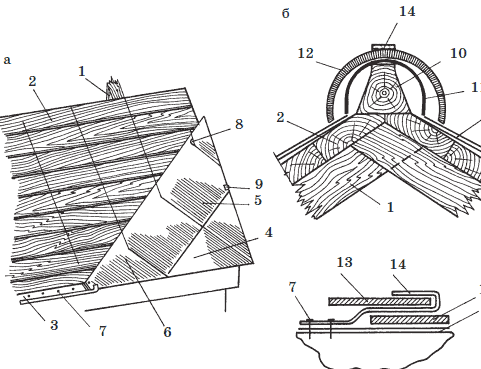
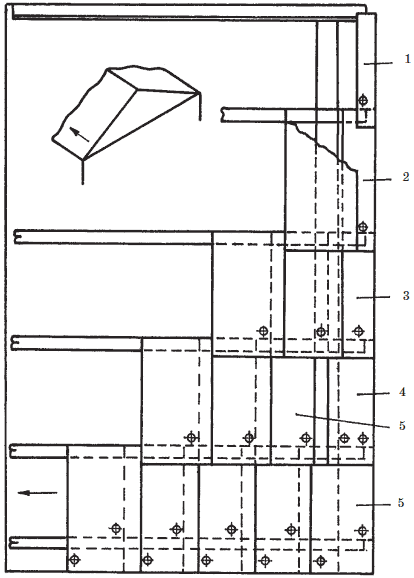
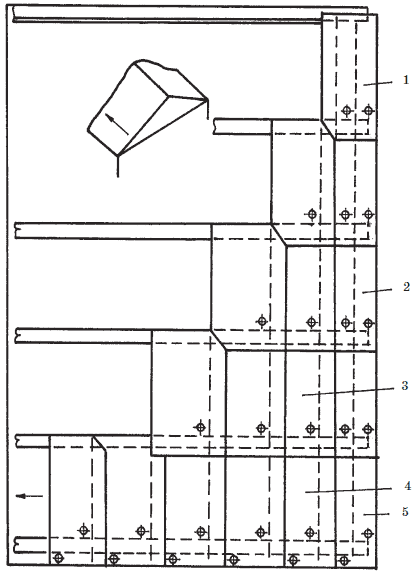
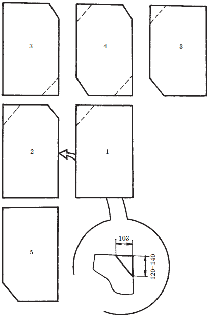
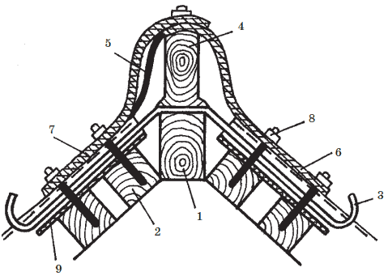
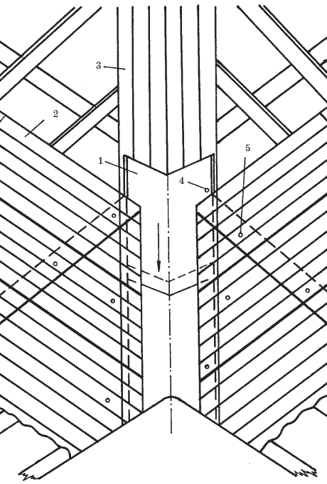
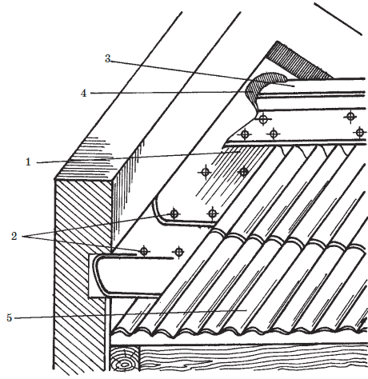
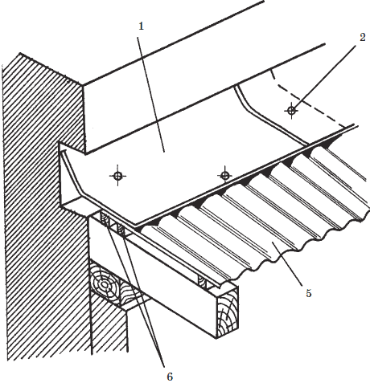
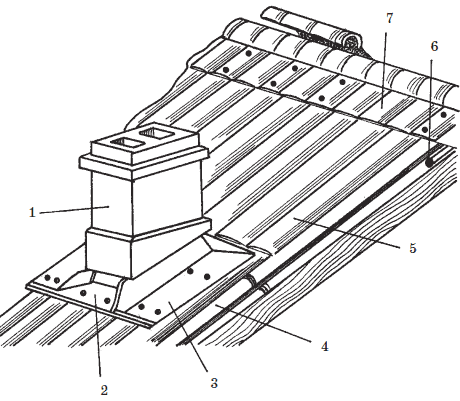

Из неметаллических материалов кровля.
 Кровля из асбестоцементных плиток
Кровля из асбестоцементных плиток
После подготовки кровельного материала, осмотра и сортировки асбестоцементных плиток, а также заготовки и установки по технологии стальных элементов кровли (картин карнизных свесов и надстенных желобов, полос разжелобков и ендов, воротника дымовой трубы и др. приступают к укладке плиток.
Укладывают плитки на скатах снизу вверх (от карниза к коньку) и справа налево. Допускается укладка и в обратном направлении: слева направо.
Кровельные работы ведутся «русским способом»: плитки выкладывают одновременно в 2–3 рядах по диагонали внахлестку ( рис. 61а). В карнизном ряду кладут краевые плитки 4, которые крепят двумя гвоздями 7. Далее все четные ряды (в том числе второй) начинают с укладки полуплиток 6, а все нечетные – целых плиток. Полуплитки крепят гвоздями, а целые плитки – двумя гвоздями и противоветровой кнопкой 8. Кнопку устанавливают на нижележащую плитку и одновременно ее головку заводят под обрезанные углы рядовых плиток так, чтобы стержень кнопки оказался между ними. Сверху место стыка углов нижележащего ряда накрывается нижним углом плитки верхнего ряда, в котором имеется отверстие для стержня кнопки. Легким нажимом молотка стержень пригибается к плоскости. Краевые и фронтонные плитки крепятся также при помощи противоветровых скоб 9 (что очень важно в районах с сильными ветрами).

Рис. 61. Покрытие кровли асбестоцементной плиткой: а – покрытие ската; б – покрытие конька: 1 – стропильная нога; 2 – обрешетка; 3 – выравнивающая рейка; 4 – краевая плитка; 5 – цельная плитка; 6 – половинчатая плитка; 7 – гвоздь; 8 – противоветровая кнопка; 9 – противоветровая скоба; 10 – коньковый брус; 11 – рубероидная лента; 12 – желобчатый конек; 13 – накрывающий конец желобчатого конька; 14 – скоба
Внимание!
Плитки нельзя приколачивать гвоздями наглухо – в них могут появиться трещины. Вместе с тем слабое крепление позволит кровле вибрировать. Головки гвоздей должны только соприкасаться с поверхностью плиток.
Для облегчения кровельных работ до начала покрытия скатов асбестоцементными плитками желательно нанести разметочную сетку. Ширина каждой ячейки сетки – 23,5 см, а высота – 22,5 см.
Кровельные работы лучше выполнять сидя на укрепленной на обрешетке скамейке. Необходимо также иметь возок и ящик с крепежными деталями.
Карнизы крыши из асбестоцементных плиток покрывают стальными картинами карнизных свесов, а разжелобки – заранее подготовленными полосами из оцинкованной стали. Дымовую трубу обшивают стальным воротником. Места примыкания кровли к вертикальным плоскостям закрывают фартуками из кровельной стали, нижние концы которых на 15 см перекрывают кровельные асбестоцементные плитки. Эти концы крепятся противоветровыми кнопками и шурупами с полукруглыми головками или одними кнопками. Головки шурупов могут иметь стальные и резиновые шайбы, смазанные суриковой замазкой. Шурупы вкручиваются до того момента, пока из-под шайбы не начнет выступать замазка. Замазку необходимо сразу пришпаклевать.
Для покрытия конька и ребер ( рис. 61б) на вершине стропил 1 крепится коньковый брус 10, а по нему прокладывается рубероидная лента 11. По коньковому брусу укладывают желобчатые асбестоцементные коньки 12, имеющие с одной стороны расширенный конец 13, а с другой – суженный. Первый конек укладывается расширенным концом к фронтонному свесу или внизу ребра и закрепляется противоветровой скобой. Узкий конец крепится скобой 14 и гвоздями 7. На узкий конец первого конька до упора надевается расширенным концом второй конек. Нахлест при этом должен быть равен 70 мм. Все узкие раструбы коньков крепятся также, как первый конек.
Кровля из асбестоцементных листов и листов не содержащих асбестПосле подготовки основания под кровлю производится осмотр и подготовка к укладке в соответствии с выбранным способом волнистых асбестоцементных листов, замеряются их длина и ширина, просверливаются отверстия, необходимые для креплений (сверло для этого применяется диаметром на 2 мм превышающим диаметр гвоздя или шурупа) и обрезаются углы или продольные полосы листов.
Первый способ– укладка со смещением продольных кромок листов на одну волну по отношению к таким же кромкам листов ранее уложенного ряда ( рис. 62).

Рис. 62. Покрытие скатов волнистыми листами со смещением на волну: 1 – двухволновый лист; 2 – трехволновый лист; 3 – четырехволновый лист; 4 – пятиволновый лист; 5 – полномерный лист
Второй способ– укладка с совмещением продольных кромок листов во всех вышеукладываемых рядах ( рис. 63).

Рис. 63. Покрытие скатов волнистыми листами с совмещением кромок: 1 – коньковый лист; 2 – фронтонный лист; 3 – рядовой лист; 4 – сливной лист; 5 – угловой лист
Первый способ предпочтителен для узких по уклону, но длинных в поперечном направлении скатов; второй – для широких по уклону, но коротких в поперечном направлении скатов.
Различные способы кровельных работ требуют волнистых асбестоцементных листов различной конфигурации. Для укладки листов со смещением продольных стыков необходимо достаточное число листов с двумя, тремя, четырьмя и пятью волнами, а также полномерные, целые листы. Для укладки листов с совмещением продольных стыков у листов обрезают различные углы ( рис. 64). Обрезка углов производится в стусле (специальном кондукторе с направляющими).

Рис. 64. Порядок обрезки листов при их укладке с совмещением продольных стыков: 1 – угловой лист; 2 – сливной лист; 3 – фронтонный лист; 4 – рядовой лист; 5 – коньковый лист
В том и другом случае волнистые асбестоцементные листы укладывают на скатах справа налево и снизу вверх. Исключение возможно, если необходимо учитывать направление ветра: листы можно уложить и слева направо, если направление господствующего ветра идет навстречу традиционному способу укладки. В поперечном направлении листы укладываются внахлестку на одну волну, а в продольном – с перекрытием на 140 мм (при уклоне 58 %) или на 120 мм (при более крутом склоне).
Крепят волнистый шифер гвоздями, шурупами, иногда противоветровыми скобами (на свесах) через каждые 1,0–1,5 м. Карнизные и фронтонные ряды крепят двумя гвоздями на один лист, рядовые – по одному гвоздю (шурупу). Отверстия для крепления сверлят после укладки смежных листов. Открытые шляпки гвоздей и шурупов защищают антикоррозийным покрытием (лаком, олифой, краской или эпоксидной смолой).
Уязвимым местом кровель из волнистых асбестоцементных листов являются зазоры и щели, образующиеся в местах сопряжения листов. Поэтому зазоры, превышающие 7 мм рекомендуется промазывать готовыми герметиками или холодной мастикой, наносимой слоем толщиной 5–6 мм и шириной 30–40 мм (в поперечных соединениях) и 60–70 мм (в продольных стыках).
На крышу волнистые асбестоцементные листы подаются подъемником или краном, а непосредственно по местам укладки развозятся на возках по 6–8 штук в каждом. Укладка шифера ведется на коленях или сидя на обрешетке.
Для покрытия конька крыши ( рис. 65) на стропила вначале устанавливают брусок 1 сечением 70x90 мм и с двух сторон от него крепят по два обрешеточных бруса 2. К центральному бруску крепят скобы 3 для подвеса ходовых мостиков и коньковый брусок 4, верхняя грань которого закруглена. Коньковый брусок по всей длине оборачивается рубероидом 5, поверх которого укладываются коньковые листы, укладывающиеся на смежные скаты, причем первым крепится конек 6, удлиненный на 10 мм, а вторым – более короткий конек 7. Коньки кладутся расширенным концом по направлению к фронтону.

Рис. 65. Покрытие конька шиферной кровли: 1 – центральный брусок; 2 – брусок обрешетки; 3 – скоба для крепления ходовых мостиков; 4 – коньковый брусок; 5 – рубероид; 6 – нижний удлиненный конек; 7 – верхний укороченный конек; 8 – гвоздь; 9 – лист основного покрытия
Внимание!
Отверстия для крепления сверлятся сразу на обоих коньках: по два – на плоском отвороте и по два – на продольной оси горба. При этом отверстия на отворотах должны проходить через гребни волн листов основного покрытия 9.
Разжелобки и ендовы ( рис. 66) покрываются специальными асбестоцементными лотками 1, которые укладывают до покрытия скатов в направлении снизу вверх. Нижнюю кромку первого лотка и коньковую кромку последнего лотка обрезают ровно по контуру карнизного и конькового срезов. Вдоль каждой стороны лотка сверлят по три отверстия. Крепят лотки шурупами 4. После укладки лотков начинают выкладывать скаты крыши. При этом волнистые асбестоцементные листы основного покрытия 2 укладываются на лоток внахлетску на 15 см (без крепления по краям).

Рис. 66. Покрытие разжелобка шиферной кровли: 1 – асбестоцементный лоток; 2 – волнистый асбестоцементный лист основного покрытия; 3 – дощатое основание разжелобка; 4 – шуруп; 5 – гвоздь
Продольное примыкание к стене ската шиферной кровли делают следующим образом: кровельное покрытие подводят впритык к стене ( рис. 67), сверху место примыкания закрывают асбестоцементными уголками 3, верхние отвороты которых крепятся в бороздах стены, а нижние отвороты прибиваются гвоздями 2 к листам основного покрытия 5. Уголки укладываются снизу вверх. Последний на скате уголок доводят до конька 5. Места стыка уголков и конька заделывают цементным раствором 6.

Рис. 67. Продольное примыкание ската шиферной кровли к стене: 1 – асбестоцементный уголок; 2 – гвоздь; 3 – конек; 4 – цементный раствор; 5 – лист основного покрытия
Поперечное примыкание ската кровли к стене ( рис. 68) отличается тем, что листы основного покрытия в месте примыкания к стропилам прибивают посредством двух брусков 6.

Рис. 68. Поперечное примыкание ската шиферной кровли к стене: 1 – асбестоцементный уголок; 2 – гвоздь; 5 – волнистый лист основного покрытия; 6 – бруски обрешетки
Воротник дымовой трубы ( рис. 69) делают из готовых асбестоцементных уголков, причем рядовое покрытие ската устраивается вплотную к стволу трубы. Широкие горизонтальные отвороты переднего 2 и боковых 3 уголков воротника крепят шурупами, пропускаемыми через гребни волн основного покрытия.

Рис. 69. Устройство воротника трубы для кровли из асбестоцементных листов: 1 – ствол дымовой трубы; 2 – передний уголок воротника; 3 – боковой уголок; 4 – волнистый лист основного покрытия; 5 – затрубный уголок; 6 – скоба для крепления ходового мостика; 7 – конек
В случае, когда готовые асбестоцементные уголки отсутствуют, для покрытия разжелобков, ендов, конька, ребер, примыканий и устройства воротника дымовой трубы может быть использована кровельная сталь.
Внимание!
Окончательно уложенную кровлю из волнистых асбестоцементных листов можно окрасить нитроэмалями, масляными или перхлорвиниловыми красками, либо оставить их без окраски. Можно вопрос цвета крыши решить ранее, при заготовке материалов и сразу купить шиферные листы нужного цвета.
Изложенная выше техника устройства кровли из волнистых асбестоцементных листов не зависит от профиля и марки применяемого шифера (вопросы подготовки основания для кровли, связанные с этими вопросами, были рассмотрены нами ранее).
По этой же технологии ведется устройство кровель из безасбестового или цементно-волокнистого шифера, из листов «Ондулина», «Вартти-2000» прозрачных волнистых кровельных материалов, но при их применении необходимо учитывать дополнительные требования и рекомендации фирм и предприятий-производителей.